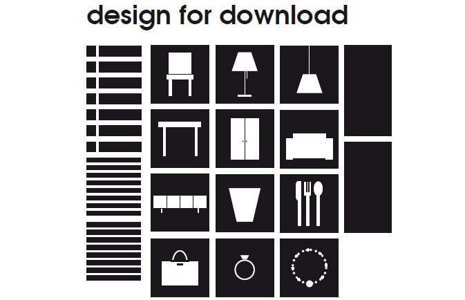
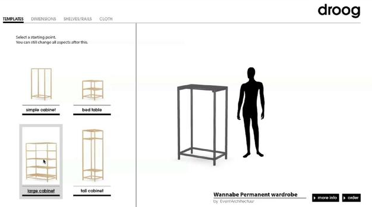
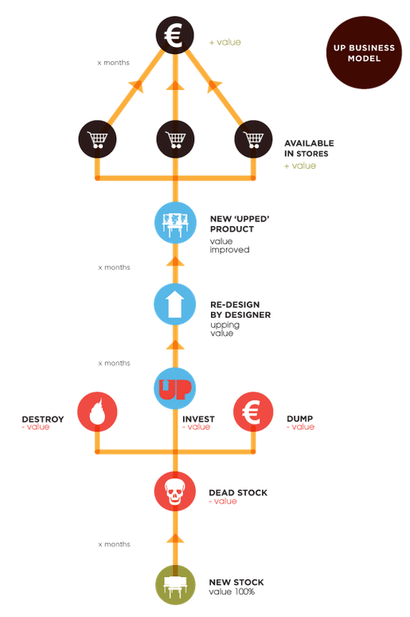

2013-07-17
"Everything is Makeable,Anytime,Anywhere,by Anyone!” 2011年有這麼樣一個激勵人心的口號，一切都是可創造的，任何時間、任何地方、任何人！(這是來自楚格設計於2011年的米蘭設計展對開放設計提出的口號)
楚格設計(Droog Desgn)是一個來自荷蘭的設計團隊，由Gijs Bakker和藝術史專家Renny Ramakers在1993年建立，團隊宗旨是期望藉由激發設計思考的討論，引入人文思考，加以質疑或評判，認為無論產品型態、功能或用途都唯有在消化整合後，才能產生符合當代最適切的位置。
Droog在2011年的米蘭設計展上創造了一個設計互動模式「Design for Downloads」，在設計展上公開EventArchitectuur 和 Minale-Maeda兩位設計師設計的傢俱及配件，人們可以透過網路平台自行下載設計以供變更使用，另外，Droog也設計一套透過調整數值的方式，藉由設計師開放到平台上的素材，讓使用者可以在網頁上自由選取一個喜愛的模組、顏色、材質、形狀，隨自己喜好自由搭配及組合，完成屬於自己最獨特的作品
Remakers強調開放設計是一種長遠的思考，賦與設計以截然不同的觀點，然而，消費者真的能夠為自己設計嗎？過於開放的設計是否會造成產品的缺憾呢？以上提問說明開放設計是相當複雜的系統，需要通盤的考量及規劃，為此Droog邀請產品設計、建築師、服裝設計、品牌設計、學校機構……等許多領域的專家加入討論，這些設計師除了開放自己的設計藍圖外更可以自行決定消費者參與設計的程度，作為實踐用戶設計的理想。
不同於以往的使用經驗，設計不再是創作者與消費者如此明確的角色分工切割，Droog提出未來客戶將成為生產者的設計觀點，此做法將替社會帶來強大的引動能量，藉由「Design for Download」，設計行業與消費者間的動態互動過程，兩者界線將越顯模糊。
Droog作為一個設計領域中強調設計水平及社會影響力的角色，近期又提出一套設計運動－Up project，一個產品從創意迸發到生產至於販售，隨著時間的使用消耗，最終落為廢物或垃圾，等待下一個充滿創新的替代品受消費者青睞，再以另一種樣貌發揮自己的效能。Droog對產品歷程提出了一項願景，認為不存在浪費，任何物件都存在有價值的材料，可做後續利用，因此，本著創新動力，讓產品重新進入設計，推動相關努力，讓向上運動成為可能。
楚格設計(Droog Design)帶動了荷蘭設計，在將荷蘭設計推往國際的過程中，替產品融入了創意、環保等創新概念，激發了無限思考，或許，最切合使用的產品，正應當重返大眾的使用需求，透過反省及質疑，我們才能理解設計的本質，並非不斷投以華麗的裝飾，扭曲了物件用途，也折損了其獨特及適用性。
參考資料 : http://www.droog.com/
延伸閱讀 : http://opendesignnow.org/index.php/article/do-it-with-droog-roel-klaassen-peter-troxler/